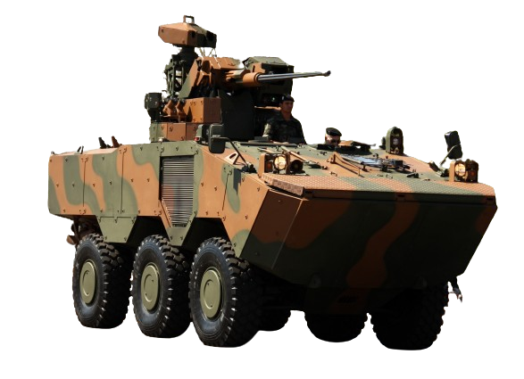

Leopard 1A5
O Leopard 1A5 é o estágio evolutivo do blindado alemão Leopard 1A1. O blindado recebeu aperfeiçoamentos na capacidade de combate noturno e sob mau tempo; também teve aperfeiçoado a sua capacidade de efetuar disparos contra alvos em movimento, garantindo assim maior mobilidade e flexibilidade no campo de batalha.
O comando do Exército Brasileiro vislumbrou a necessidade de substituir os carros de combate Leopard 1A1, já em obsolescência, na primeira década do ano 2000, incorporados em 1993 estes carros de combate representavam a espinha dorsal da força de blindados brasileira.

VBTP-MR Guarani
O VBTP-MR Guarani (Viatura Blindada de Transporte de Pessoal Médio sobre Rodas - Guarani) é uma família de veículos militares blindados de combate, desenvolvida no Brasil pelo Departamento de Ciência e Tecnologia do Exército Brasileiro, que contratou a filial brasileira da montadora italiana Iveco para sua produção.

AGRALE MARRUÁ AM21 4X4
Desenvolvidos especialmente para as Forças de Defesa, as viaturas 4x4 Agrale Marruá chegam com grande facilidade aos locais de mais
difícil acesso, sendo ideais para a realização das mais duras missões. Permite um desempenho superior às operações